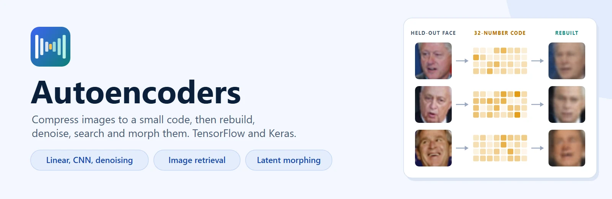
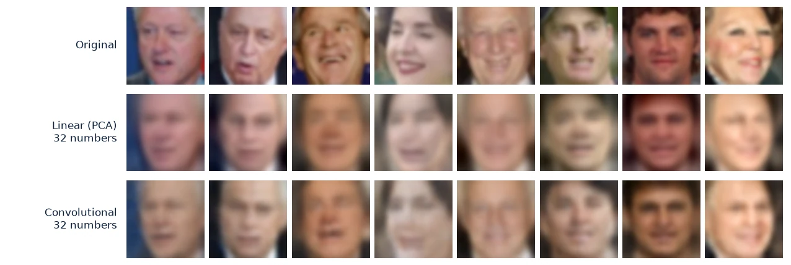
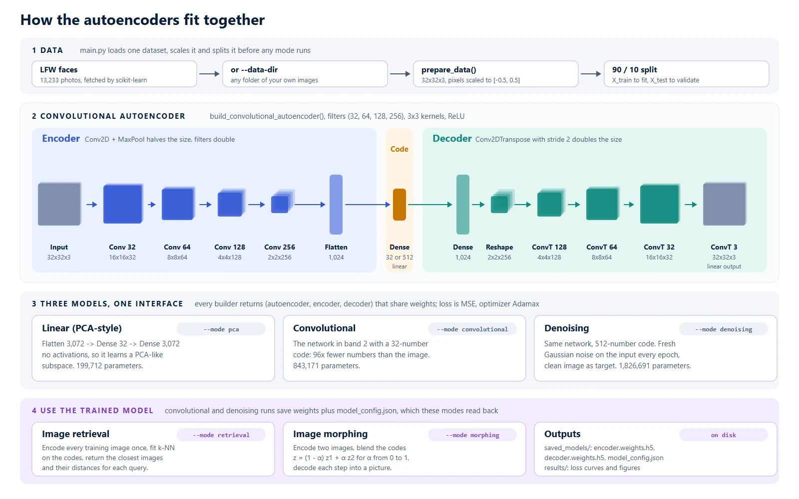
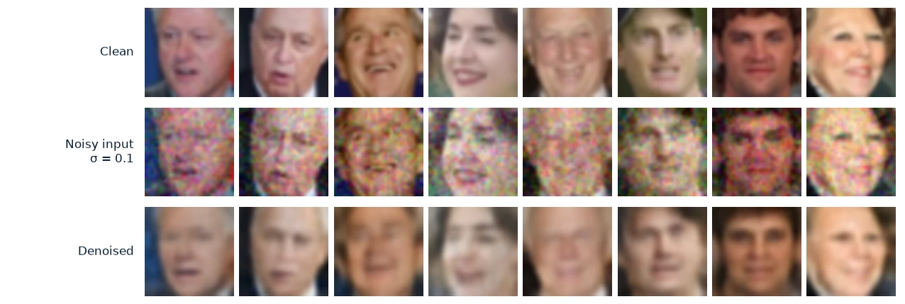
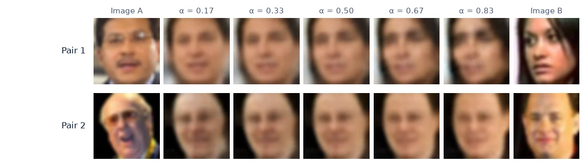
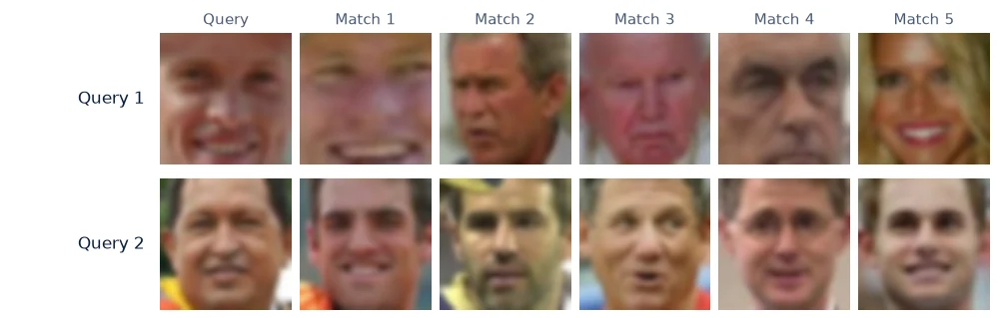

Autoencoders & Decoders using Keras
Project Overview
Three image autoencoders in TensorFlow and Keras (a linear PCA-style model, a deep convolutional model and a denoising model) that share one encoder/decoder interface, plus two things you can do with a trained encoder: find similar images and morph one image into another. One command line tool trains and runs all of them on the Labeled Faces in the Wild dataset or on a folder of your own images.

It works as a learning resource, as a baseline for image compression and denoising experiments, and as a small, readable starting point for image embeddings and similarity search. Every builder returns the full autoencoder, the encoder and the decoder as separate Keras models that share weights, so the encoder can be used on its own after training.
Why I Built This
It started in 2019 as a TensorFlow 1.x notebook. It worked, but it was one long file that was hard to rerun, extend or share. In late 2025 I rebuilt it as a Python package with a command line interface, and in October 2026 I went back over it end to end: ran every mode on current TensorFlow, measured the results, and fixed what that turned up.
I also wanted a reference that shows autoencoders at three levels of complexity, with real applications beyond reconstruction, for anyone learning how latent representations work.
Updates in October 2026
- A data bug that made training meaningless. scikit-learn already returns LFW pixels in [0, 1], and the code divided by 255 again, so every model was trained on images that were almost uniformly grey. Fixed, along with the face crop: all 13,233 photos are now used at a true 32x32 instead of 3,023 photos at 16x12 stretched to 32x32.
- Runs on current TensorFlow. The models failed to build on Keras 3.15, and convolutional training crashed on TensorFlow 2.21 because TensorBoard is no longer installed with it. Both fixed; tested on TensorFlow 2.21 with NumPy 2.
- A linear code layer. The convolutional code used ReLU, and 8 of its 32 units were zero for every face, so the model was really working with 24 numbers and lost to the linear baseline. With a linear code it beats the linear model by 8 percent at the same code size.
- The denoising model now saves its best weights. It used to reload the best checkpoint into a new object, so the encoder and decoder that were saved kept the last epoch's weights.
- Your own images.
--data-dirtrains and runs every mode on any folder of images. - Saved models remember their settings. A
model_config.jsonnext to the weights lets retrieval and morphing rebuild a 512-number denoising model without extra flags. - Tests, Conda and docs. A pytest suite that runs in under a minute, an
environment.yml, a new architecture diagram, and result figures and numbers from a real training run.
The Core Idea
An autoencoder is trained to reproduce its input through a narrow middle layer, the code. Because the code is much smaller than the image, the encoder has to keep what matters and the decoder has to rebuild the rest. No labels are needed: the image is its own target.
Input Image (32×32×3 = 3,072 numbers)
↓
[ENCODER]
Compresses information
↓
Latent Code (32 numbers)
↓
[DECODER]
Reconstructs from code
↓
Output Image (32×32×3 = 3,072 numbers)
Loss = mean((Input - Output)²) → minimize reconstruction errorThe code space picks up useful structure: images that look alike get codes that are close together, which is what similarity search uses, and decoding a blend of two codes gives an image between the two, which is what morphing uses.

Held-out faces (top), rebuilt from a 32-number code by the linear model (middle) and the convolutional model (bottom). Both codes are 96 times smaller than the image.
Key Features
Linear (PCA-style) Autoencoder
One dense layer down, one back up, no activations, 199,712 parameters. Learns a PCA-like subspace and trains in about 2 min on a laptop CPU.
Convolutional Autoencoder
Four Conv2D + MaxPool blocks down to a 32-number code and four transposed convolutions back up. 843,171 parameters, lower error than the linear model at the same code size.
Denoising Autoencoder
The same network with a 512-number code, trained on images with fresh Gaussian noise every epoch and the clean image as target.
Image Retrieval
Encode every image once, fit k-nearest neighbours on the codes, and return the closest images and their distances for any query.
Image Morphing
Blend the codes of two images step by step and decode each step to get a transition between them.
LFW or Your Own Images
Five modes behind one command line tool. Trains on all 13,233 LFW faces by default, or on any folder of images with --data-dir.
Architecture

The top band is the data path that every mode shares: LFW or your own folder, scaled to [-0.5, 0.5] and split 90/10. The second band is the convolutional network with the shape after every block. The third shows how the three models differ, and the bottom band shows what the saved encoder and decoder are used for.
Linear Autoencoder (Baseline)
Flatten the image, project it to a 32-number code with one dense layer, and project back. With no activations the best this model can do under squared error is the subspace spanned by the top principal components, so it learns what PCA learns, through backpropagation.
Input (32×32×3)
↓
Flatten → (3,072)
↓
Dense(32) ← Bottleneck (96× compression)
↓
Dense(3,072)
↓
Reshape → (32×32×3)
↓
Output (32×32×3)
Parameters: 199,712Convolutional Autoencoder
Four convolutional blocks halve the image each time while the filters grow from 32 to 256. The decoder mirrors the encoder with stride-2 transposed convolutions, a learned upsampling. Same 96× compression as the linear model, and its non-linear features bring the error down by 8 percent.
ENCODER:
Input (32×32×3)
→ Conv2D(32, 3×3) + ReLU + MaxPool(2×2) → (16×16×32)
→ Conv2D(64, 3×3) + ReLU + MaxPool(2×2) → (8×8×64)
→ Conv2D(128, 3×3) + ReLU + MaxPool(2×2) → (4×4×128)
→ Conv2D(256, 3×3) + ReLU + MaxPool(2×2) → (2×2×256)
→ Flatten → Dense(32), linear ← Bottleneck
DECODER:
Dense(1024) + ReLU → Reshape (2×2×256)
→ Conv2DTranspose(128, 3×3, stride=2) + ReLU → (4×4×128)
→ Conv2DTranspose(64, 3×3, stride=2) + ReLU → (8×8×64)
→ Conv2DTranspose(32, 3×3, stride=2) + ReLU → (16×16×32)
→ Conv2DTranspose(3, 3×3, stride=2) → (32×32×3)
Parameters: 843,171 (code 32) | 1,826,691 (code 512, denoising)How It Works
- Data loading: All 13,233 LFW photos are downloaded through scikit-learn on first use, cropped to a square around the face and resized to 32×32×3, or every image under
--data-diris loaded instead. Pixels are scaled to [-0.5, 0.5] and 10 percent are held out with a fixed seed. - Model building: Each builder returns three models (the full autoencoder, the encoder and the decoder) built from the same layers, so they share weights.
- Training: The autoencoder minimises the mean squared error between input and output with Adamax. Early stopping restores the best epoch, the learning rate halves when validation loss stalls, and the best model is checkpointed.
- Saving: Encoder and decoder weights are written with a
model_config.jsonholding the code and image size, so later modes rebuild the same network. - Retrieval: All training images are encoded once and a k-nearest-neighbour index is fitted on the codes. A query is encoded and its nearest codes are returned.
- Morphing: Two images are encoded, their codes are blended at N steps from one to the other, and each blend is decoded.
- Denoising: Fresh Gaussian noise is added to the inputs every epoch while the target stays the clean image, so the network learns to separate faces from noise instead of memorising the noise.
Core Code Snippets
Building and training the convolutional autoencoder
The build function returns three models that share weights, which is what lets the encoder and decoder be used on their own after training.
from models import build_convolutional_autoencoder
from utils import load_image_folder, prepare_data
X = load_image_folder("path/to/images", dimx=32, dimy=32)
X_train, X_test = prepare_data(X, test_size=0.1)
autoencoder, encoder, decoder = build_convolutional_autoencoder(
input_shape=(32, 32, 3),
code_size=32,
filters=(32, 64, 128, 256)
)
autoencoder.compile(optimizer='adamax', loss='mse')
autoencoder.fit(X_train, X_train, epochs=25, batch_size=32)Image retrieval via latent space k-NN
Once images are encoded, finding similar images is a nearest neighbour search over 32 numbers per image instead of 3,072 pixels.
from image_retrieval import ImageRetrieval
retrieval = ImageRetrieval(encoder)
retrieval.index_images(X_train) # Encode all images once
# Find 5 most similar images to a query
distances, similar = retrieval.find_similar(query_image, n_neighbors=5)Image morphing via latent interpolation
from image_morphing import interpolate_images
# Generate 7-step morph between two images
morphed = interpolate_images(
image1, image2,
encoder, decoder,
n_steps=7
)
# How it works internally:
# z1 = encoder(image1), z2 = encoder(image2)
# z_interp = (1-α)×z1 + α×z2 for α ∈ [0, 1]
# morphed[i] = decoder(z_interp[i])Denoising training loop
Fresh noise every epoch means the network never sees the same corruption twice. The target is always the clean image, and the weights from the best validation epoch are restored at the end.
from utils import apply_gaussian_noise
for epoch in range(25):
X_train_noisy = apply_gaussian_noise(X_train, sigma=0.1)
autoencoder.fit(X_train_noisy, X_train, epochs=1)
# Key: noisy input → clean targetResults
96×
Compression (3,072 → 32)
8%
Lower error, CNN vs linear
54%
Less noise after denoising
13,233
LFW faces
Model Comparison
Measured on all LFW faces at 32×32 (11,909 for training, 1,324 held out) on a laptop CPU (Intel Core i7-14650HX, TensorFlow 2.21). MSE is on the held-out faces with pixels in [-0.5, 0.5].
Denoising

Morphing

Retrieval

Usage
Setup and Demo
Create the Conda environment and run the one minute demo, which trains the linear model and saves a reconstruction.
conda env create -f environment.yml
conda activate autoencoders
python example_usage.pyLinear Mode
Fast baseline. The quickest way to see an autoencoder train.
python main.py --mode pca \
--epochs 15 --code-size 32Convolutional Mode
Best reconstruction at 32 numbers. Saves the encoder, decoder and settings for later modes.
python main.py --mode convolutional \
--epochs 25 --code-size 32Denoising Mode
Trains on noisy inputs with clean targets and a larger code.
python main.py --mode denoising \
--code-size 512 --noise-sigma 0.1Retrieval and Morphing
Use a trained model. Its code and image size are read from model_config.json.
python main.py --mode retrieval \
--model-path saved_models
python main.py --mode morphing \
--model-path saved_modelsYour Own Images
Any folder of jpg, png, bmp, gif or webp files, subfolders included.
python main.py --mode convolutional \
--data-dir path/to/imagesProject Structure
Autoencoders-Decoders-using-Keras/
│
├── main.py # CLI entry point (5 modes)
├── example_usage.py # One minute demo
├── config.py # Default settings
├── environment.yml # Conda environment
│
├── models/ # Autoencoder architectures
│ ├── pca_autoencoder.py # Linear (PCA-style)
│ ├── convolutional_autoencoder.py # Deep CNN, saving and loading
│ └── denoising_autoencoder.py # Noise-robust training
│
├── utils/ # Reusable utilities
│ ├── data_loader.py # LFW and image folders
│ ├── visualization.py # Plotting tools
│ └── noise.py # Noise generation
│
├── image_retrieval.py # Similarity search
├── image_morphing.py # Image interpolation
├── tests/ # pytest suite
└── docs/ # Usage and architecture guidesTech Stack
Deep Learning
Data & ML
Visualization
Engineering
My Contribution
I designed and built this project end to end:
- Rebuilt a 2019 TensorFlow 1.x notebook as a modular TensorFlow 2 package with a single command line interface
- Designed three autoencoder architectures of increasing complexity (linear, convolutional, denoising) behind one interface
- Built image retrieval with k-NN in code space and image morphing by code interpolation
- Audited every mode on current TensorFlow in 2026, found and fixed a data scaling bug, a checkpoint bug and two compatibility breaks, and added tests
- Added training on custom image folders and saved model settings so trained models can be reused without matching flags by hand
- Wrote the documentation, the architecture diagram and the result figures from a real training run
Challenges & Learnings
A silent bug is worse than a crash
The double scaling of LFW pixels never raised an error. Training ran, the loss went down, and the
models were learning to output grey squares. It only showed up when I printed the pixel range straight
out of the loader. The scaling step and the folder loader now have tests that check the range they produce.
Linear vs non-linear compression
The linear model captures overall shape and lighting but loses edges and texture. Putting its output
next to the convolutional model's, at the same 32-number code, makes the value of non-linear features
easy to see.
Latent space continuity is not guaranteed
Unlike variational autoencoders, plain autoencoders do not make the space between codes meaningful.
Morphing works because faces are dense in that space, but mid-way frames can look washed out. That sets
the right expectations for what morphing can show.
Code size is a trade-off
32 numbers give 96× compression and visibly soft faces. The denoising model uses 512 numbers because
it has to rebuild detail that the noise has hidden; a small code would remove the noise and most of
the face with it.
Future Improvements
- Add a Variational Autoencoder (VAE) for a smooth code space and sampling new images
- Expose salt and pepper and occlusion noise as command line options
- Support larger inputs (64×64 and up) with a deeper encoder
- Plot the code space with t-SNE or UMAP to show cluster structure
- Add a small Gradio demo for retrieval and morphing
Closing Note
This project is open source under the MIT license. It shows how autoencoders work at three levels of complexity, uses them for retrieval and morphing, and runs on current TensorFlow with tests and measured results. If you are studying representation learning, need a baseline for image compression or denoising, or want a small, readable starting point for image embeddings, it covers the full path from theory to working tools.